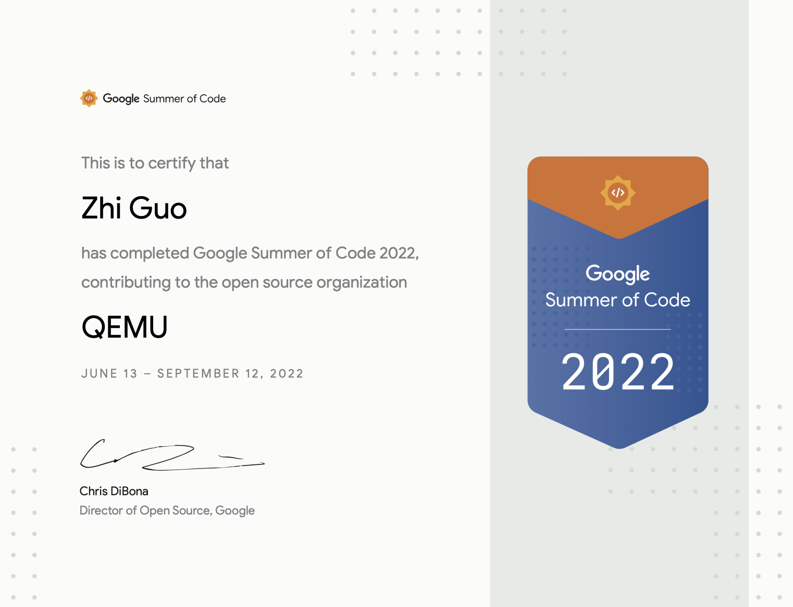

GSoC 2022 review
2022年春季刚开学的时候看到了国内开源之夏组织的关于GSoC的一个分享会[1]，后来又陆续在多个渠道上对GSoC有了进一步的了解[2][3][4][5]。因为我觉得通过GSoC可以丰富我的暑期生活，并获得对于读研的我来说一笔不小的收入，于是开始了申请并完成GSoC的旅途。
时间线
GSoC 2022的主要时间节点如下:
| 时间 | 事项 |
|---|---|
| 3/7 | GSoC公布入选的社区以及项目 |
| 3/7 - 4/3 | 与社区积极沟通，了解项目 |
| 4/4 - 4/19 | 提交Proposal |
| 4/20 - 5/20 | 社区可能会安排笔试与面试 |
| 5/20 | GSoC公布入选的参与者以及项目 |
| 6/13 - 7/25 | 开发阶段 1 |
| 7/25 - 7/29 | 中期评审,通过后发第一笔钱 |
| 7/25 - 9/12 | 开发阶段 2 |
| 9/4 - 9/12 | 最终评审 |
| 9/20 | 结果宣布,通过后发第二笔钱 |
前期准备
GSoC的前期阶段(入选者公布之前)非常重要。通常来说，GSoC项目的实现难度不大，GSoC的出发点是为了让更多的新人感受开源的过程并成为开源社区的一员。但一个项目可能会有来自世界各地的多个竞争者，相对来说proposal被选中的难度要大于最终项目通过评审的难度，proposal被选中，这个项目离完成也就不远了。 因此为了通过GSoC我们需要在前期发力。我是在4/1日的时候意识到自己要花时间申请GSoC了，但是当时时间已经比较晚，我去一些感兴趣的社区里面逛时发现他们的Slack里面或者是Github上都已经有一些申请者的足迹。有的申请者甚至已经完成了几个PR。但所幸后来还是顺利的拿到了QEMU社区的一个项目, 这里是我在这个过程中总结到的一些的tips:
- 在3/7 - 4/3号时就需要和中意的社区沟通，并给他们的项目完成一些good first issue, 刷高自己的存在感。
- 在4/4 - 4/19号之间，写好proposal，可以用一个google doc提前共享给项目的mentor，根据他们的反馈不断修改(社区(主要是mentor)根据proposal选择项目的参与者，proposal应该尽可能完善并符合mentor的意见)。
- 一个contributor可以申请多个项目，可以准备多个项目保险一点(我只有申请一个项目，因为当时觉得如果不中的话暑假也不会没有事情干，相对来说准备多个项目的申请还是很累的)。
- 遇到有的项目有很活跃的其他申请者，比如已经提交了几个PR，可以考虑换个项目申请，不需要硬卷。
- 在选择项目的时候，遇到好说话的mentor可以在邮件里面询问：“目前有几个人在申请这个项目”，“你看了我的proposal后觉得我能够申请成功吗”。
- 有的社区会有笔试或者面试，笔试不是把结果跑出了就可以，重点在对corner case对处理以及代码风格上。
- GSoC 2022取消了对参与者学生身份的要求，不是学生也可以参与并获得一笔收入。
- GSoC 的中奖率挺高的，我在的一个国内学生参与GSoC 2022的QQ群，里面proposal通过的概率达到了88%，而且大部分人只提交了一个proposal。
Proposal书写
我的proposal[6]主要参考了几位前辈们的proposal[7][8]，并且在mentor的意见下进行了反复的修改，自认为写的还不错。
自我介绍
这里需要向Mentor说明自己背景是契合这个项目的，并且最好能够列出自己已经给社区提交的PR或者其他工作（可以先提供某个PR的链接，哪怕还没有被合入，但是能够让mentor看到我们的热情，并且我们能够在评审阶段继续花时间合入这个PR)。窃以为还有一个技巧是强调我们是第一次接触开源社区，GSoC的初心就是帮助更多人了解开源，进入开源社区。
项目描述
这一部分务必要写的明白清晰，要让mentor看出来我们是懂这个项目的。一般社区里面在介绍这个项目的时候会提供一个简要的描述和一些关键的链接，我们需要仔细的阅读那些链接，弄明白这个项目要做的是什么。比如我的项目是为Linux/QEMU实现VIRTIO 1.1里面出现的新特性: In order。这个描述和协议文档里面都写的不清楚，我第一次向mentor聊我的理解时就出现了很多分歧，于是我在这一部分用一个例子，在in order的情况下，一次driver和device交互的过程中，descriptor table, used ring, avail ring里面的值分别是多少。这能够帮助mentor指出我对于项目理解的偏颇，同时也能够在最终的proposal终证明我是搞懂了这个特性的。 除此之外，我还阅读了Linux/QEMU/DPDK里面相应的代码，用大量的代码和描述来展示我对这个项目的上心（其实后来再看当时根本没有读懂，不过还是通过这些代码和描述将proposal的篇幅给撑起来了)。
项目计划
我们需要根据项目的要求设计一个合理的timeline，我觉得最好是精确到每一周的工作，这样mentor会觉得我们做这个项目是靠谱的。不过我发现自己最后根本没有按照这个timeline来, 当时写的太理想化了，可能mentor也知道当初写的不对，但并没有说出来。所以我感觉这个计划还是用来向mentor说明我们做这个项目是花了时间准备的，是有规划的，让mentor觉得我们拿到这个项目是靠谱的。
完成项目
写代码&发patch
因为我的社区是QEMU，最终的目标是将代码合并进入Linux/QEMU的主线。因此写代码就一定要奔着发patch去。
首先我们应该发一个RFC的patch给社区，让社区的reviewer和mentor一起评阅我们的代码。我这里犯了一个错误，因为我刚开始更加倾向于Github工作流，当mentor开会时说我最好能够让他们看到代码再给意见，我是用Github发PR的方式让他们看我的代码（我的mentor当时没有建议我发patch给社区，可能一个原因是因为当时还很早，另一个原因是他们会非常尊重Contributor的选择），结果我按照mentor在Github上review的意见修改了很久后，再通过邮件的形式发patch给社区，社区reviewer的答复跟我mentor在Github给的意见相冲突，我得重新设计并修改，这浪费了不少的时间。这个教训就是reviewer决定我们patch是否能够合入他维护的分支，因此我们的代码一定最开始就要按照社区reviewer的意见来实现，但是reviewer除了回复邮件不会教我们怎样去实现，这时我们可以求助mentor。
给社区发送patch的过程是一次对git使用能力的锻炼，Linux/QEMU社区要求代码里面的每一个commit完成且仅完成一个功能，每个commit要非常清晰，另外由于会有很多次对patch的修改，我们很多时候需要只改某个patch，而其他commit不发生改变。熟练的掌握git rebase对于完成这些要求帮助很大。 每次发patch之前都应该使用check style脚本检查patch是否符合规范，每次发一个新版本的patch给社区应该在cover leter里面指明这一版本修改是哪些。这篇博客记录了我给QEMU发patch的过程，这篇博客介绍了我常用的git技巧以及QEMU社区的开发者们实现的一个非常好用的发patch工具git publish的使用。
在项目Final evaluation的时候我们需要提交一个我们代码的链接，我将自己对Linux，QEMU代码的修改都放在这个仓库[10]。
与mentor沟通
我和我的mentor是每周定期在google meeting里面开一个小时的会，除此之外有什么问题会直接在Matrix里面讨论。这对于我们英文特别是口语有比较高的要求，我自己遇到的一个问题就是在用英语开会时很容易词不达意，比如说我想向跟mentor说我们可以暂时关注design而不是代码风格，却表达成了我觉得代码风格不重要。因为我英文不是很好，比起直接用中文开会讨论，用英文开会效率要低很多。
中期评审与最终评审
在我的经历中，中期评审是非常随意的，只是一个调查问卷，基本上只要开发阶段1没有从mentor眼里消失就没事。但听说有的社区非常严格，会要求每周合并PR到主线，并且还会对参与者实习生搞末位淘汰制（窃以为已经脱离GSoC的初心了)。最终评审比中期评审要正式一些，我们需要提交一个项目链接，这个链接中需要有个README介绍自己的工作。在我们提交完之后，mentor也会提交他们对于我们的意见。即使项目要求里面的功能没有实现完也可以通过GSoC的（比如我），mentor很好说话不会卡人，不过我觉得做事情要做完整，不能够只要GSoC通过哪怕工作没做完就跑路。
Achievement
完成GSoC[11]让我收入了3600刀，拿到了GSoC 2022通过的证书，还让我的名字还出现在了2022年KVM Forum上。但我最想要的成就还没有达到，就是我关于VIRTIO In order feature的代码合并进入Linux/QEMU的主线，我也将继续推进这个工作。


参考
[1] https://mp.weixin.qq.com/s/0KSz7PR9VVAXokgJMrSXRQ
[2] https://zhuanlan.zhihu.com/p/27823910
[3] https://gitter.im/Gsoc-cn/Lobby
[4] https://www.zhihu.com/question/66687826/answer/1207799885
[5] https://www.bilibili.com/video/BV1vv411W7En?spm_id_from=333.999.0.0
[6] https://docs.google.com/document/d/1Hz48bPc3HN24qyxvwBQrCyr8bR-ny5JVUkSFkKB8tKc/edit
[7] https://docs.google.com/document/d/1b0HhRVKtCJkDaxP9dfSwzthzX0FRv6Y_0Yk58r634TA/edit
[8] https://docs.google.com/document/d/1lWXpWhUN6cE06sjQANjWxamc_X3ddbSphTRSofChLyk/edit
[9] https://iaguozhi.github.io/git-tips/
[10] https://github.com/iaGuoZhi/Virtualization/tree/master/in_order
[11] https://summerofcode.withgoogle.com/programs/2022/projects